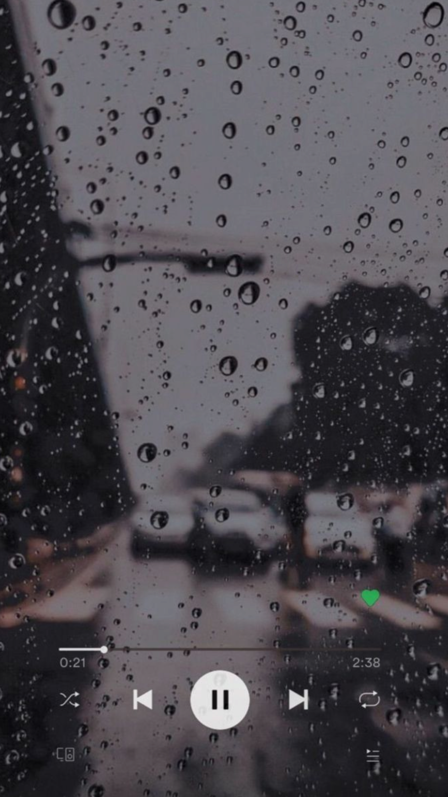
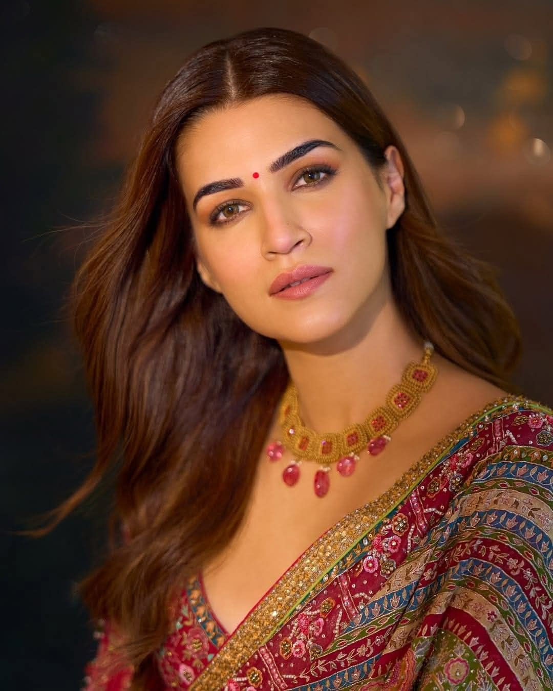
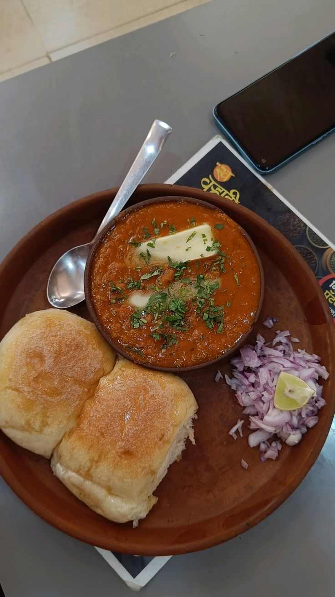
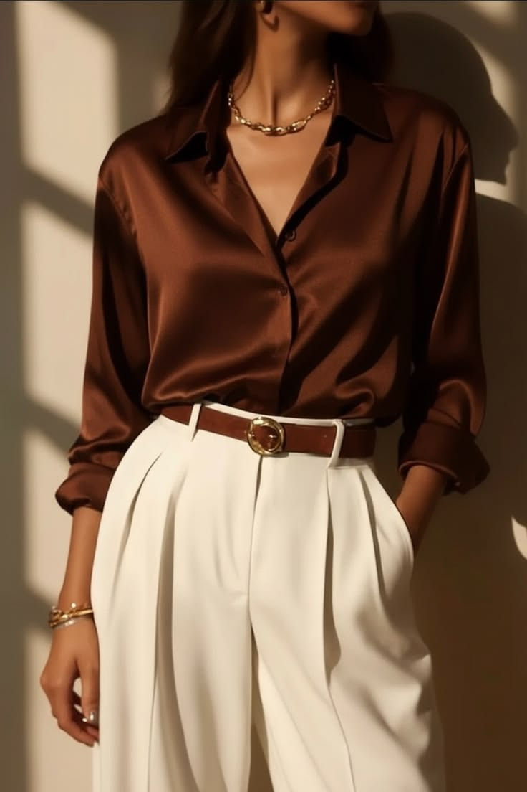

What I love
These are those things which I would prefer over almost everything
Lavender
Lavender is my favorite color because every time I see it, my brain immediately goes, "Yep, that's the one."
Sunsets
Sunsets are my favorite because they somehow make me pause, appreciate the moment, and take far more photos than necessary.
Diwali
This stands out to me as a celebration of positivity, togetherness, and new beginnings, making it my favorite time of the year.

Lily
This great song by Alan Walker stands out to me because of its unique storytelling and the way its music feels both mysterious and inspiring.
Ghost of Tsushima
Ghost of Tsushima is my favorite game because Jin Sakai spent the entire story becoming the Ghost, while I spent the entire story taking screenshots of sunsets.

Kriti Sanon
She is my favorite actress because every time she appears on screen, my attention span immediately signs a legally binding contract to focus on nothing else.

Pav Bhaji
Yes, this is my favorite dish because it has never disappointed me, unlike alarms, deadlines, and internet connections. It's simply impossible to have a bad day with Pav Bhaji on the table.
.png)
Apps I use a lot
My favorite apps perfectly balance each other: ChatGPT helps me be productive, while YouTube Shorts helps me forget what I was supposed to be productive about in the first place.

Quiet luxury look
My favorite outfit is the quiet luxury look: a chocolate-brown satin blouse, cream wide-leg trousers, and subtle accessories. It's the fashion equivalent of looking like I know what I'm doing.